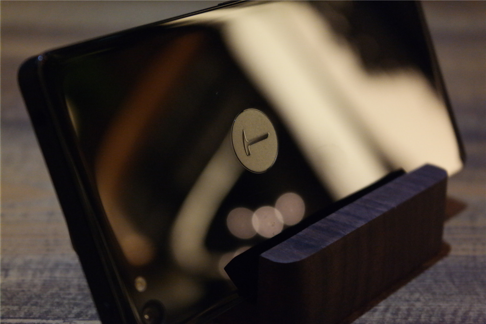
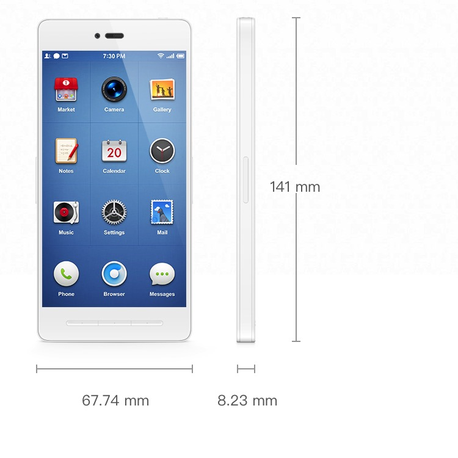
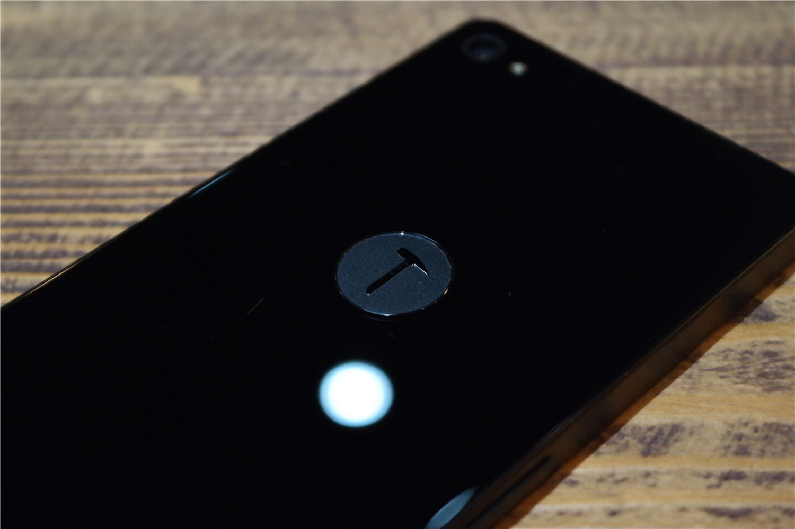
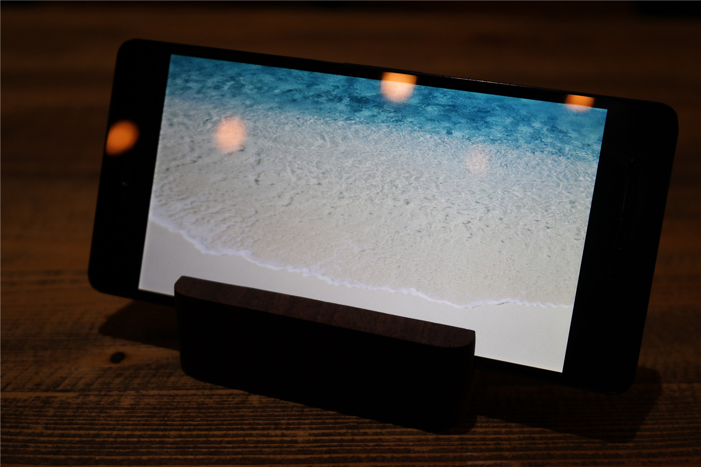
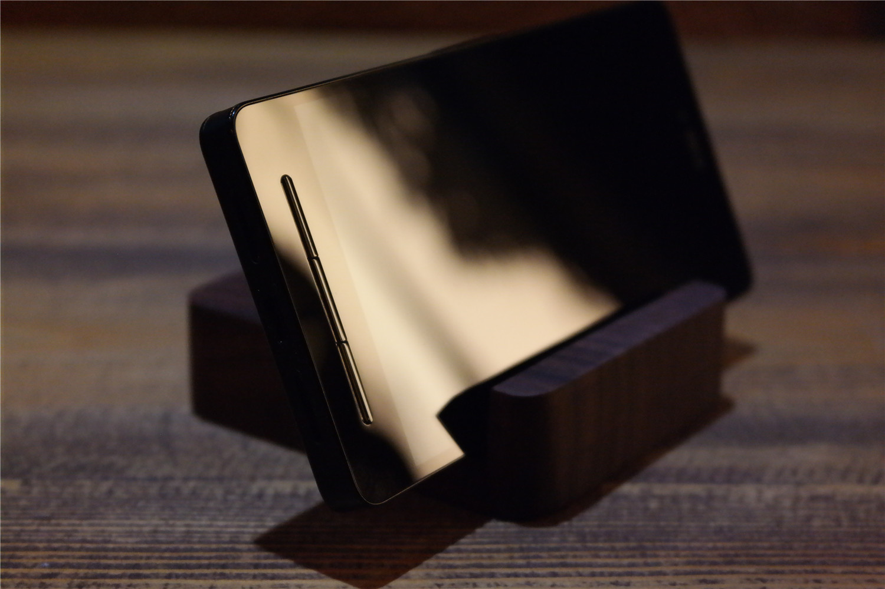
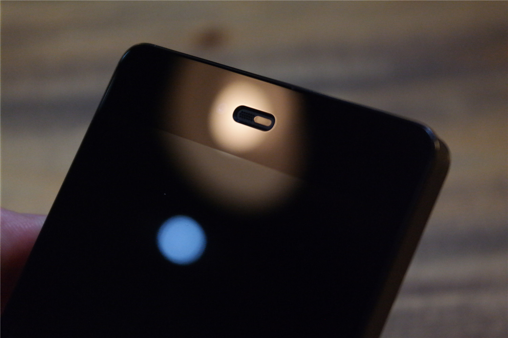
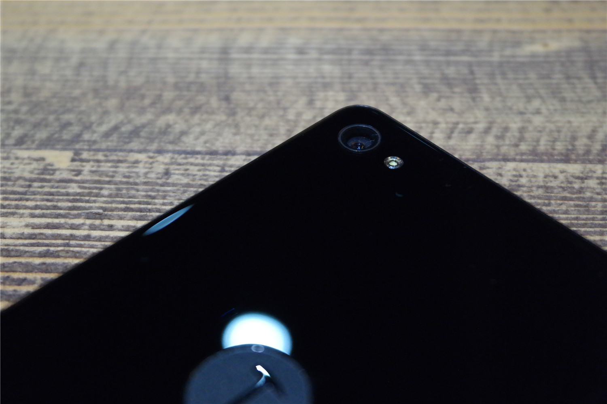
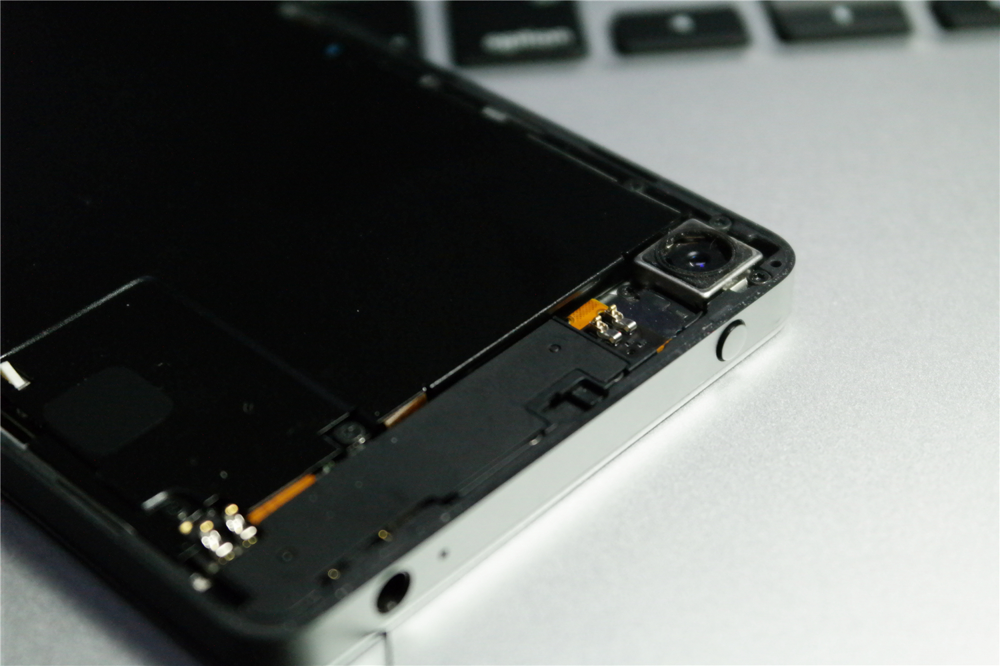
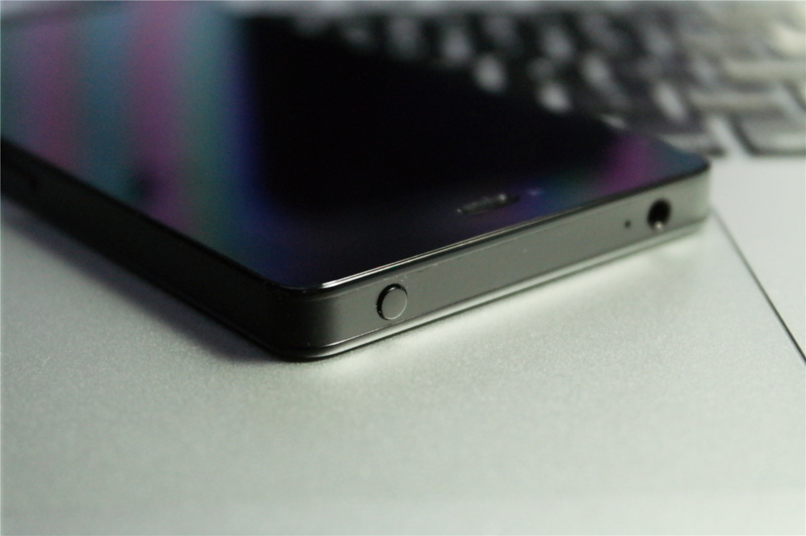
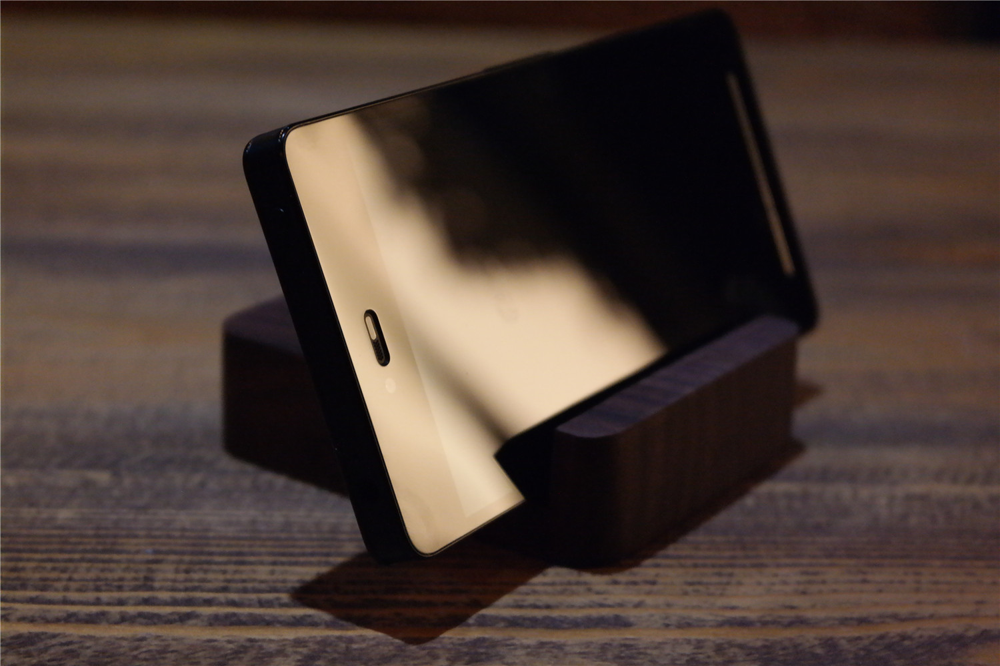

Smartisan T1 Review
22/10/2016

Oneplus2 Review

- Size: 141X68X8.23mm
- Weight: 167g
- Battery: 2850mAh
- Screen size: 5.1 inch
- SOC: Snapdragon 808
- Camera: 1300w/800w
- Resolution:1920*1080
- Price:$400
The original review is in CHINESE. This is a translated version by GOOGLE TRANSLATE.
As advertised, Smartisan T1 is certainly one of the most talked about mobile phones of 2014. Smartisan T1 at the beginning of the release was labeled "feelings" label, this marketing is undoubtedly a success, many young artists have followed the footsteps of the feelings of the purchase of this phone. However, the old Luo of doing the road is not smooth sailing, and after the debate with the king from the door, such as price cuts and other events so that the old Luo had no choice but to face, but also to Smartisan T1 become less mysterious and high can not afford.

Smartisan T1 has been published for nearly a year, whether it is objective or not objective evaluation we all look tired, to tell the truth of my experience of this article to write what new things really quite difficult, but I To ensure that the following content is from the user point of view the most realistic feelings.
Luo has always boasted his own aesthetic requirements are high, so at the expense of the overall strength of the phone to achieve the ultimate beauty. In fact, this aesthetic thing has always been very subjective, not everyone must like the appearance of the Smartisan T1, but I personally, I Smartisan T1's industrial design is still very satisfactory.

Light screen, Smartisan T1 found that the border is not narrow, but also acceptable. Do not know why the United States asked such a high Luo did not give Smartisan T1 with a narrow border, perhaps the technology is limited? This problem I can not research, can only look Smartisan T2 can have a narrow border it, after all, we all know the narrow border brings the ultimate visual enjoyment.

Smartisan T1 positive three key entities caused a big controversy, some people think that physical buttons feel bad, some people think that the entity button to reduce the rate of inadvertently touched. This problem I do not cold, whether physical buttons or virtual buttons can accept, but need some time to adapt to it.

As the old Luo said, today's cell phone light from the sensor processing more and more casual, and this has resulted in the white version of the phone generally "riddled with" the forehead. Smartisan T1 will be the perfect combination of light from the sensor together, this design in the black version of the phone is not obvious, but makes the white version of the phone a lot of beautiful. I believe this design will be widely used in the future, the benefit of intensive phobia patients.

At first glance the Smartisan T1, you might think it is like the iPhone4, but came to the back, you can find the obvious difference between the two. Smartisan T1 on the back is covered with a 2.5D radian glass, and the iPhone6 front piece of glass is more similar. This radian glass can be regarded as the crowning touch in the whole design, in the light of the mapping, Smartisan T1 will exude a suffocating beauty. This is not an exaggeration to describe, I believe most people have witnessed the same feelings.

Speaking of so many good things Smartisan T1, does not mean it is perfect, it also has some puzzling brain residual design, that is, with a screwdriver to open the back cover! Luo said at the press conference, in order to ensure the integrity of the fuselage side and integration, so I chose this "unprecedented" to the sim card way. But also stressed that ordinary users will not frequently replace the sim card, although this statement is not false, but still slightly far-fetched. In order to perfect the side of the fuselage and discard the whole machine is the best choice? And after removing the back cover, the back of the camera is completely exposed, is likely to cause into the gray.

In the Luo Wang debate, the old Luo generous recognition of the Smartisan T1 fragile glass before and after the problem. In a week of experience, I have been careful to use, but still fell several times. After the conclusion, I think the fragile Smartisan T1 problem is due to aesthetic priority design, the second is because it is really slippery! As the 2.5D glass on the back, if it is placed on the face slightly upward angle, the phone will start "skating", eventually leading to inevitable slide. So the screen is very dangerous! must! want! Glass backplane brings another problem is easy to leave scratches and fingerprints, Virgo users had to wipe the wipe.
In order to maintain the perfect symmetry with the headphone jack position, Smartisan T1 power button design in the top of the phone, in my opinion this is a very unreasonable design. Smartisan T1 relatively slender body, each time to change the hand position to press the power button, very convenient. In order to make up for this problem, long press the phone's home button can lock screen, but if the Home button has been acting as a power key function, is bound to affect its life, so this is still not the perfect solution.

Finally, of course, to come to be a summary, after a week of experience can not be very short-term experience is very thorough and comprehensive. But it is certain that today's Smartisan T1 2000 yuan in this price, from the industrial design, screen, system UI and so on, are the same price and the Meizu MX4 Pro, millet note to contend with. Smartisan T1 is a good choice if you want a phone that will make you different and unique, and you do not want to invest too much. More to mention, from the Smartisan T1 high price to the current price back to reason, we can see that its premium capacity is not strong enough, or that it is now generally fight the price of the Chinese market is incompatible with the hammer in the future pricing strategy On to be more consideration to the feelings and prices to find a reasonable balance.